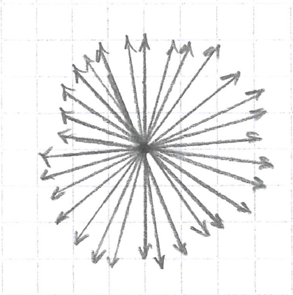
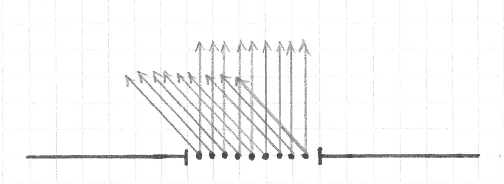
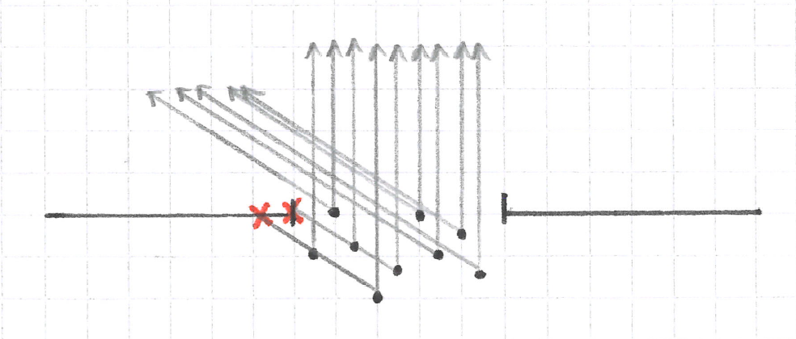
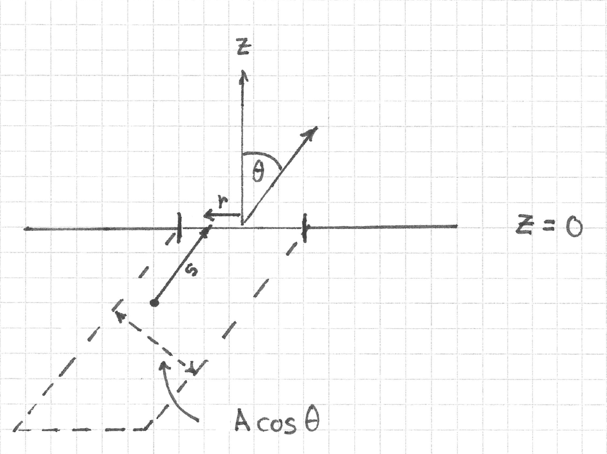

Foreshortening of Emitters and Lambert's Cosine Law
In my last post I covered some basic mathematics of radiometry. I realized shortly after writing the post that there was still a topic that I did not fully understand but that is central to radiometry and illumination optics in particular: Lambert's cosine law. According to Wikipedia, this law states:
the observed radiant intensity or luminous intensity from an ideal diffusely reflecting surface or ideal diffuse radiator is directly proportional to the cosine of the angle θ between the observer's line of sight and the surface normal; I = I0 cos θ.
The dependence of the intensity on \( \cos \theta \) is mathematically the same as the dependence of the projected area of a surface patch when viewed at an angle, a term known as foreshortening. In my previous post I had described foreshortening of remote surface patches, but not emitters. In effect, I had only described foreshortening as an effect concerning detection, but in reality it concerns emission as well. I very quickly ran into a conceptual problem when trying to apply the concept to emitters. The solution to this problem turns out to be quite... illuminating. (Ha ha.)
Ideal Emitters
I'll start by breaking down Wikipedia's definition of the cosine law. First, it deals with ideal, diffuse reflecting and radiating surfaces. For now, I'll limit the discussion to just radiating surfaces.
So what is an ideal radiating surface? It is one that can be described as a collection of mutually incoherent point sources radiating light equally in all directions. (Or so I thought.) A single point source radiating equally in all directions would look like this:

Here, each ray carries the same amount of power, and the number of rays per solid angle is constant. The length of a ray doesn't mean anything since, strictly speaking, a ray extends an infinite distance from the source.
Radiant Intensity
An ideal emitter is just a set of ideal point sources. Since the individual point sources are extended across space, we often call such a source an extended source.
Now, since each ray carries the same amount of power, then the set of all rays traveling in the same direction represents the total power emitted into that direction.
But the power emitted by a source as a function of direction is the radiant intensity of the emitter. So we can think of radiant intensity as the sum over the powers carried by all the rays traveling in the same direction from the source.
The angular distribution of the radiant intensity of an emitter, therefore, is a purely geometrical construction.
Point Sources on a Surface or in a Volume?
The Problem
Here's where I ran into my problem. I knew that LEDs could be modeled as Lambertian emitters to a decent degree of accuracy. This means that their radiant intensity should fall off like \( \cos \theta \) where \( \theta \) is the angle between the direction being considered and the normal to the surface. As described in the previous section, I also knew that the number of rays in a given direction should be proportional to the power emitted into that direction. So after counting the rays emitted into each direction, I should find that this number falls off as \( \cos \theta \).
But when I sketched a picture of an LED as a collection of ideal emitters on a surface, I got the following:

I've drawn rays in only two different directions, but you can see that the number of rays remains the same regardless of direction. So there's an inconsistency here. Where is it?
The Qualitative Solution
It took me a while to realize that the problem was with my conceptual model of the LED as a collection of emitters on a surface. A small hole in a black body radiator is also a Lambertian emitter. But a black body is a volume, not a surface. If instead I think of the LED as a window into a volume of ideal point sources, then I can see that all the rays behind the window and in the forward direction pass through the window. A fraction of the rays at any other direction are blocked, which results in a decrease in the amount of power emitted into their direction. And finally, the number of rays that are blocked increases as the angle away from the normal increases.

Derivation of Lambert's Cosine Law
In what follows I used Claude to help me set up the derivation, but have validated it myself.
The Setup
I say that this is a qualitative solution because it doesn't actually derive the \( \cos \theta \) dependence. As it turns out, the actual derivation is subtle and requires that we impose another condition onto the medium inside the LED.
First, fill the half space \( z < 0 \) with \( n \) isotropic emitters per unit volume. Then, put an opaque screen at \( z = 0 \) with a window of area \( A \). Note that the emitters now extend beyond the \( x, y \) extent of the window, unlike what I drew above.
Rigorous Ray Counting
Next, we need a way to count the number of rays leaving the window in direction \( \theta \). To do this, I'm actually going to map each ray to its source point and count the number of source points instead. Let \( \hat{d} \) represent the unit vector corresponding to direction \( \theta \). Its elements are just the direction cosines of each ray. Also, let \( r \) represent the distance from the origin to the point where the ray intersects the window. \( \vec{r} \) ranges over the window, and \(dA\) is its area element. Finally, let \( s \) represent the distance along the ray to the source point. This leads to the familiar parametric representation of a ray used by ray tracers:
$$ \vec{p} = \vec{r} - s \hat {d} $$
I've used the negative sign because I'm tracing backwards into the medium, and the magnitude of \( \vec{r} \) is just \( r \).
As seen in the figure below, the set of all source points inside the medium whose rays travel in direction \( \theta \) and that also exit the window fills a volume whose differential element is \( dV = \cos \theta dA \, ds \).

If each source point emits a total power \( P \) into a solid angle of \( 4 \pi \) steradians, then the intensity as a function of \( \theta \) is
$$ I ( \theta ) = \frac{n P}{4 \pi} \int_{window} \cos \theta \, dA \int_{s=0}^{\infty} ds = \infty . $$
Oops.
Preventing Infinite Intensity
The thing which prevents the power from blowing up is absorption by the medium. Let \( \alpha \) represent the Lambert-Beer absorption coefficient of the LED material. Then the power carried along a ray is attenuated by a factor \( \exp \left(- \alpha s \right) \) after a path length \(s \) inside the material. The integral for intensity as a function of \( \theta \) is now
$$ I ( \theta) = \frac{n P}{4 \pi} \int_{window} \cos \theta \, dA \int_{s=0}^{\infty} \exp \left( - \alpha s \right) ds = \frac{n P}{4 \pi \alpha} A \cos \theta. $$
This is exactly Lambert's cosine law, with \( I_0 = \frac{n P}{4 \pi \alpha} A \).
Some Final Observations
I can go a bit further. Dividing out the projected area \( A \cos \theta \) gives the radiance, which is independent of angle:
$$ L = \frac{n P}{4 \pi \alpha}. $$
This has units of power per area per solid angle, as it should.
I was genuinely surprised to learn how important absorption is to deriving Lambert's cosine law. If the material did not absorb but had a finite thickness \( D \) (to prevent the integral from blowing up), then the integral over path length would be \( D / \cos \theta \). The cosine in the denominator would cancel the one from the projected area of the window. The radiance would furthermore increase towards larger angles like \( 1 / \cos \theta \). In other words, it would no longer be constant.
Finally, I think it's interesting that, under this conceptual setup, Lambert's cosine law is still just foreshortening of a patch when viewed at an angle. The difference is that this time we're looking at the patch/window from inside the LED material.
Comments
Comments powered by Disqus